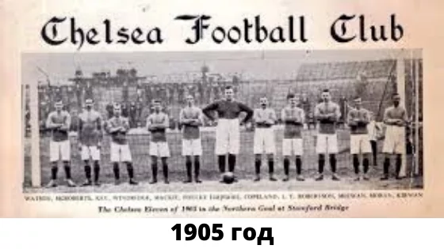
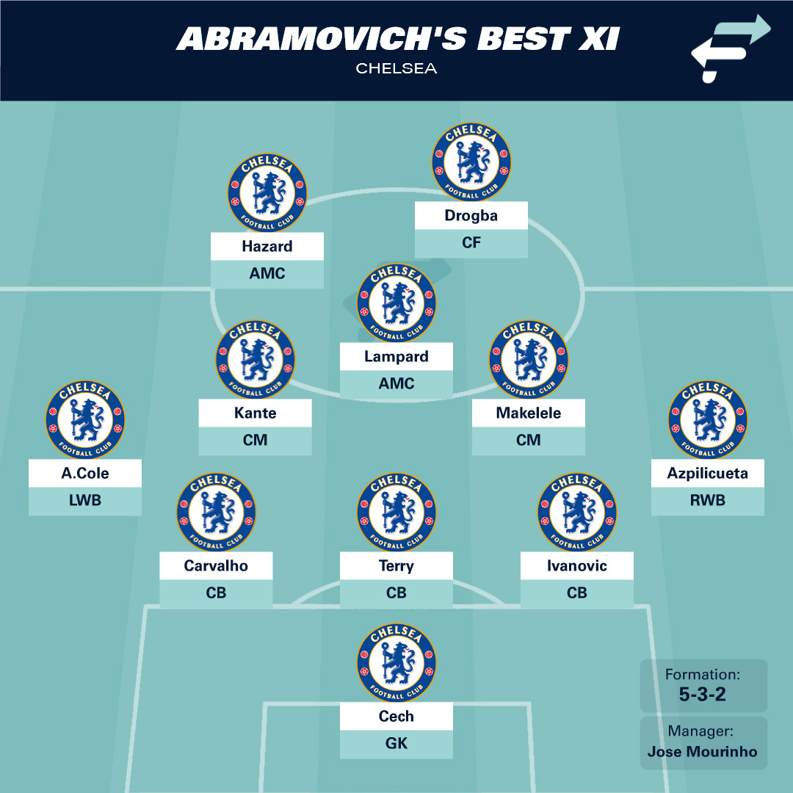

Воспоминание из детства
В детстве я посмотрел с братом матч Челси против Манчестера Юнайтед.Мне очень понравился этот матч тем, как футболисты Челси шли в атаку, отдавая самого себя ,и очень изящно использовали мяч во время дриблинга и передач.Из за этого я и полюбил футбольный клуб Челси.
История возникновения футбольного клуба Челси
Футбольный клуб «Челси» был основан в 1905 году братьями Мирс. Братья Мирс решили создать команду, которая играла бы на стадионе «Стэмфорд Бридж», существовавшем с 1877 года. Вскоре новая команда подала заявку на участие в английском Втором дивизионе, и первого успеха «Челси» пришлось ждать всего десять лет. Через 50 лет после основания «Пенсионеры» (у клуба было всего два прозвища - «Синие» и «Пенсионеры» , а «Аристократов» не было) стали чемпионами страны, а в 1955 году заветная медаль покорилась команде Теда Дрейка.
Лучший состав Челси в эпоху Романа Абрамовича
Несомненно, эпоха Романа Абрамовича была лучшим временем, когда Челси можно было назвать одной из лучших команд мира. Далее я хочу показать вам, лучший состав Челси.
Трофеи ФК Челси
Футбольный клуб «Челси» по праву считается одним из самых успешных клубов Англии и Европы. За свою богатую историю «Челси» собрал значительную коллекцию трофеев, благодаря которым он доминировал на разных уровнях футбольных соревнований. Вот из главных достижений:
- Лига Чемпионов УЕФА-2
- Премьер-лига-6
- Кубок Англии-8
- Кубок лиги-5
- Лига Европы УЕФА-2
- Кубок обладателей кубков УЕФА-2
- Клубный чемпионат мира ФИФА-1
- Суперкубок УЕФА-2
Состав Челси на данный момент
На данный момент Челси терпит перестройку, так как в 2022 году клуб преобрел Тодд Боэли с командой инвесторов. Нынешний состав выглядит многообещающе, потому что в команде очень много молодых и перспективных ребят
Основной состав на данный момент:
- Роберт Санчез
- Марк Кукурелья
- Леви Колуилл
- Тосин Адарабиойо
- Весле Фофана
- Энцо Фернандес
- Мойсес Кайседо
- Коул Палмер
- Джейдон Санчо
- Кристофер Нкунку
- Нони Мадуэке